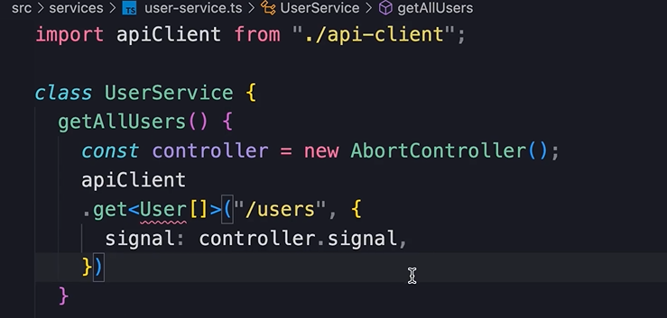

HOME
Extracting the User Service
The Next problem
The next problem with our code is that the app component is too
concerned with making http requests.
For example, it knows about the abort controller...
The abort controller is purely about http, it cancels an http request.
Our component also knows about the request methods like get, post,
patch, and delete.
It also knows about our endpoint...
The endpoint is also repeated many times in this component.
Analogy
All these issues has our component acting like a chef whos only job is
to cook, but we have him buying groceries and taking orders too.
The app component should only do it's job which is rendering markup
and handling high level user interactions.
To improve our code, we should extract all the logic concerning http
requests into a separate service.
💡This allows us to separate concers and make our code more modular
and reusable.
Potentially we could reuse the same service in another component. If
somewhere else we need to fetch the list of users, we can reuse our
service.
user service
First, create this file...

In the file, import our apiClient...
Then, create a class called UserService...
In that class we will have methods for getting the users, creating a
user, updating a user and deleting a user.
Finally, we are going to export a new instance of this class as a
default object.
Now in the UserService class we create a method called getAllUsers

In this method we are going to have the logic for sending an http
request to our backend.
First, we take away this line where we defined the controller in the
app...
and paste it here...
We also need to grab this bit of code...
and paste that one here as well...

Here we have to have access to the User interface.
The proper place to have this interface is in this user-services file,
because this is where we have all the functionality for working with
users.
So we go back to the app component and grab the user interface then
paste it in...
And since we are going to use this interface in our app component, we
need to export the interface from this module...
Good the err is gone.
Now when we send this get request it returns a promise.
We can return this promis right away...
With that we can go back to the app component, and import the User...
 And from the same module import the userService...
And from the same module import the userService...
Next, instead of calling apiClient, call userService...
Then replace the get with getAllUsers...
So we dont have to worry about passing a signal, we simply tell the
service, 'give me all the users.'
This returns a promise, so just like before .then we setUsers and
setLoading...
🗯But now we have a tiny problem. Ahhh!
Accessing the controller object
In our implementation we need access to the controller object...
This controller is purely about making http request.
We don't want to export this from our user-service module because it's
part of the implementation detail.
🔮As a metaphor, think of a remote control, a remote has a complex
logic board on the inside, but as a user we don't have to be worried
about that complexity.
We simply work with the buttons on the outside. Those buttons hide the
implementation detail.
So to solve the compilation issue, instead of returning this promise
right away like this...
We should store it in an object called request, and at the end return
an object with two propertys...
So the consumer of the UserService simply uses the cancel method, or
the cancel button, to cancel a request. How it happens internally is
irrelevant.
Thats implementation detail.
Another problem
Back to the app component.
We need to make a small change here...

We destructure userService.getAllUsers() and destructure the request
and cancel.
After that we call request.then...
Finally at the end, instead of calling controller.abort, we call
cancel()...
With this change our effect hook knows nothing about making http
request, so we have better sepparation of concerns.
EXERCISE
For an exercise, move the other logic around for making http requests
into our user-service.
Please keep the solution hidden until you have tried yourself.
SOLUTION
Next we need to work on deleting a user.
Our service needs to expose a method for deleting a user.
So back to the user-service.
We add a deleteUser function that takes an id as a number...
Then take this apiClient code from here...
And paste it in the deleteUser function...
also change user.id to just id...
Next we should return the promise from this method...
Then back to the app again...
We call userService.delete user and pass the user.id...

Next we need to work on adding a user.
So create a function for creating a user that takes in a user
object...
Then in the app cut the code where we made a post request for a
new user and paste it here...
 make sure to rename newUser to just user and return the promise...
make sure to rename newUser to just user and return the promise...
Then we call userservice create user and pass the newUser...
The last one is updating the user.
Create an updateUser function that takes a user object and then
paste in the patch request for updating a user...
As the final step call the update funciton...
💡You should notice that we don't need to import the apiClient
anymore...